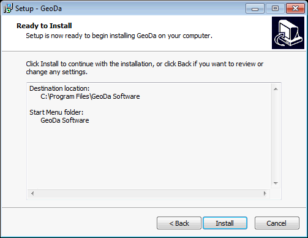

Download GeoDa for Windows
The download will begin immediately after clicking on this link:
GeoDa 1.10
Download links for users in China (using Baidu YunPan).
中国用户请用下面连接下载GeoDa（百度云）
Note: for windows users, auto-upgrade from 1.8.6 may encounter a UAC issue or a failure of drag-n-drop file to GeoDa feature. To solve this problem, one needs to uninstall GeoDa first (also please manually delete the directory "c:\program files\GeoDa Software") and then download and install GeoDa.
Previous versions
GeoDa 1.8.16
GeoDa 1.8.14
GeoDa 1.8.12
GeoDa 1.8.10
GeoDa 1.8.8
GeoDa 1.6.7
Legacy GeoDa
If you want to use the 2004 GeoDa 0.95i binary for Windows XP, select the "Geoda 0.9.5-i Windows XP Installer" link below. The download will begin immediately after you login.
- Note that GeoDa 0.9.5-i runs on Windows XP only.
- GeoDa 0.9.5-i Windows XP Installer
Note: the 32-bit GeoDa program works on Windows XP and Vista, but we are only supplying limited support for pre-Windows 7.
Don't know which windows version?
To determine if your Windows is 32-bit or 64-bit, open Control Panel > System and Security > System. On the information panel, look for "System type" which will say either "32-bit Operating System" or "64-bit Operating System". See screenshot below as an example:

Installation Instruction
Install GeoDa
Step 1:

Step 2:

Step 3:

Step 4:

Step 5:

Step 6:

Run GeoDa


Uninstall GeoDa
To uninstall GeoDa, either select the "Uninstall" program under the "GeoDa Software" program group from the Start menu programs as shown below:
Step 1:

Step 2:

Step 3:

Alternatively, to uninstall GeoDa, go to Control Panel > Programs > Programs and Features and select the GeoDa program from the list and select Uninstall as shown below:

Create a USB running GeoDa
To run GeoDa on Windows machines without administrator permission (e.g. this is normal in a lab environment), there is a trick to create a USB running GeoDa without installation:
Step 1:
Find a windows machine with administrator permission, install GeoDa. (Note: make sure the visual c++ 2010 redistributable has been installed)
Step 2:
Copy two files to GeoDa installation directory "C:\Program Files\GeoDa Software":
C:\Windows\System32\MSVCP100.dll
C:\Windows\System32\MSVCR100.dll
Step 3:
Zip the GeoDa installation directory "C:\Program Files\GeoDa Software", and distribute the zip file as GeoDa program to students/users.
Contact
Questions? Contact us.